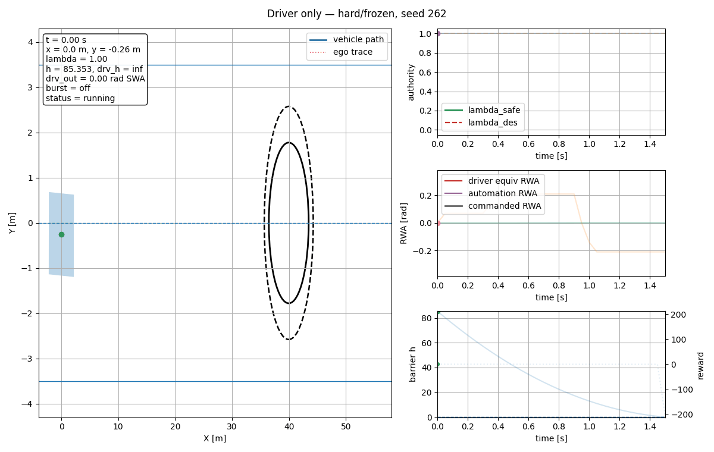
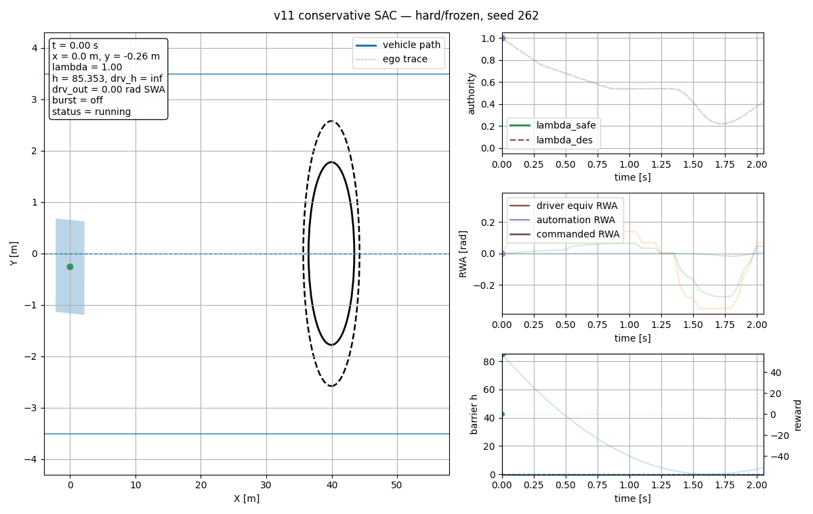

Scenario: difficulty=hard, driver_profile=frozen, seed=262.

Fails to avoid the obstacle.
Successful avoidance with stronger takeover.
Successful avoidance close to the heuristic policy.

Successful avoidance with lower mean takeover than the heuristic in this seed.